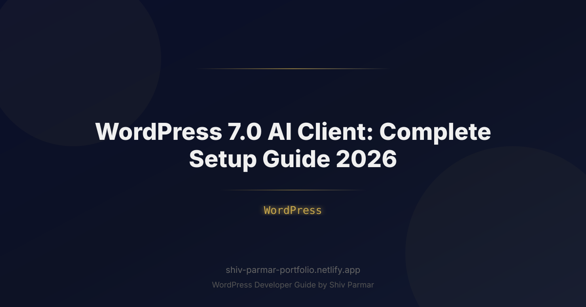

WordPress 7.0 AI Client: Complete Setup Guide 2026
Table of Contents
- What Is the WordPress 7.0 AI Client?
- Requirements and Pre-Setup Checklist
- Connect Your First AI Client (Step by Step)
- Configure Permissions and Scopes
- ChatGPT vs Claude vs Gemini: Which Client to Connect
- Security Best Practices for the AI Client
- Troubleshooting Common Setup Problems
- Conclusion
- Frequently Asked Questions
Hello, developers! I'm Shiv Parmar, a WordPress developer with 4+ years of experience setting up and maintaining WordPress sites for clients worldwide. WordPress 7.0 shipped with a headline feature that changes how we work with AI: a built-in AI Client — a secure, permission-scoped bridge between your site and AI assistants like ChatGPT, Claude, and Gemini. Instead of pasting file exports into a chat window, you connect an approved client once and let it read or edit content under explicit scopes you control. In this guide I'll walk through the complete setup: requirements, step-by-step connection, permission scopes, and the troubleshooting checklist I use on client sites.
The whole process takes about fifteen minutes if your server is ready. If you are completely new to AI on WordPress and want the bigger picture first, read my complete guide to adding AI to WordPress, then come back here for the client connection itself.
What Is the WordPress 7.0 AI Client?
The AI Client is WordPress core's official connection layer between your site and an external AI assistant. You enable it under Settings → AI, create a credential, choose the scopes the assistant may use, and paste a connection URI into your AI app. From that point the assistant can talk to your site over an authenticated transport — a streaming REST route by default, or a local MCP server if you prefer that protocol. WordPress 7.1 then extends this client with first-class response streaming and vector embeddings, which the WordPress 7.1 AI Client streaming and embeddings guide walks through step by step.
Three design decisions make it different from the plugin era of AI integrations:
- Core-managed authentication: connections use Application Passwords or OAuth 2.1 tokens issued by WordPress itself, revocable at any time from the admin.
- Capability-scoped access: every request is checked against scopes you choose — for example read-only access to posts, or full editing rights for a single author role.
- Per-user audit trail: each action taken through the client is logged with the connected user, so you can see exactly what an assistant changed and when.
Typical jobs you can delegate once connected: summarizing your latest drafts, generating metadata, answering "how is this site configured?" questions, and making small content edits — for example rewording the intro copy on your product filter page without opening the admin at all.
Requirements and Pre-Setup Checklist
Before you start, confirm your environment checks these boxes. Most failed setups I get called in to fix are missing item one, two, or four:
- WordPress 7.0 or newer — check Dashboard → Updates; the AI Client does not exist in earlier versions.
- HTTPS everywhere — both Application Passwords and OAuth 2.1 refuse plain HTTP connections.
- An administrator account for the initial connection; you can delegate to lower roles later through scopes.
- A reachable REST API — visit
/wp-json/in the browser; if it 404s, switch to pretty permalinks under Settings → Permalinks. - An AI assistant that supports WordPress connectors — ChatGPT with MCP, Claude Desktop, or Gemini with the REST connector.
- A recent backup — the client can edit content, so behave like you would before any automated write access.
- Clean debug log — clear existing PHP warnings so new connection errors are actually visible.
Pro Tip: Connect a staging site first with a read-only scope. Five minutes of testing on staging tells you whether the transport, permalinks, and firewall are healthy before production credentials are ever in play.
Connect Your First AI Client (Step by Step)
With the checklist done, the connection itself is linear:
- Update WordPress. Dashboard → Updates → Update to 7.0 and let the database upgrade routine finish.
- Enable the AI Client. Go to Settings → AI, toggle the AI Client on, and confirm the status indicator reads "Ready".
- Choose a transport. Leave it on REST streaming for hosted assistants like ChatGPT and Gemini; switch to local MCP if your assistant speaks the Model Context Protocol natively.
- Create credentials. Use an Application Password for personal tooling, or OAuth 2.1 for a team setup or third-party client — the latter issues scoped, expiring tokens you can rotate.
- Select scopes. Start with
posts:readandmedia:read. Add write scopes only when you have tested the read-only flow end to end. - Copy the connection URI. The AI Client screen shows a URI shaped like
/wp-json/wp-ai/v1/connect. Paste it into your assistant's WordPress connector field and approve the request. - Run a harmless test prompt. Ask the assistant to "list my three most recent draft posts". A correct answer proves the full round trip works.
You can pin the behaviour you want from wp-config.php so staging and production behave identically:
<?php
// wp-config.php — make the AI Client explicit on every environment.
define( 'WP_AI_CLIENT_ENABLED', true );
define( 'WP_AI_CLIENT_TRANSPORT', 'rest' ); // 'rest' or 'mcp'
define( 'WP_AI_CLIENT_MAX_TOKENS', 2048 );
define( 'WP_AI_CLIENT_AUDIT_LOG', true );Prefer to verify from the command line before involving any AI app? A plain authenticated request is enough — this also confirms that no security plugin is silently blocking the route:
curl -X POST "https://example.com/wp-json/wp-ai/v1/prompt" \
-u "admin:APPLICATION_PASSWORD_HERE" \
-H "Content-Type: application/json" \
-d '{"prompt":"List my three most recent drafts.","scope":"posts:read"}'Building your own routes on top of this stack later? The fundamentals are the same as any custom endpoint, so a solid REST API tutorial is the right companion reading once you outgrow the stock AI routes.
Configure Permissions and Scopes
Scopes are the whole security model of the AI Client, so spend real time here. The default grants read access only; write scopes should be granted per use case, not per habit. This table is the starting point I use with clients:
| Scope | What It Allows | Who Should Get It |
|---|---|---|
posts:read | List and view posts and drafts | Everyone — safe default |
posts:write | Create, edit, and publish posts | Editor-level assistants only |
media:upload | Upload images and documents | Assistants that illustrate your content |
site:read | Read settings, themes, and plugin list | Developers and support sessions |
options:write | Change core site options | Administrators only, temporary sessions |
You can enforce those rules in code — for example, never allow an editor-role session to reach privileged scopes:
<?php
// Restrict scopes by role before the AI Client issues a token.
add_filter( 'wp_ai_client_allowed_scopes', function ( $scopes, $user_id ) {
if ( ! user_can( $user_id, 'administrator' ) ) {
$scopes = array_diff( $scopes, array( 'options:write', 'site:read' ) );
}
return array_values( $scopes );
}, 10, 2 );Review the assigned scopes every quarter, and immediately after any role change on the team. A contractor who needed posts:write for a migration does not need it next month.
ChatGPT vs Claude vs Gemini: Which Client to Connect
All three assistants work with WordPress 7.0, but the connection path differs. Pick based on how your team already works:
| AI Client | Connection Method | Best For |
|---|---|---|
| ChatGPT | WordPress MCP connector with OAuth 2.1 tokens | Non-technical teams already living in ChatGPT — see the ChatGPT MCP plugin walkthrough |
| Claude Desktop | Remote MCP server, tokens scoped per workspace | Developers who want long, careful editing sessions — Claude-to-WordPress setup guide |
| Gemini | REST connector with Application Password | Lightweight, low-cost automation inside Google's ecosystem |
Whichever route you take, store tokens properly, keep them short-lived, and rotate them on a schedule — the OAuth 2.1 guide for secure AI access covers the full token lifecycle. Two clients can run side by side; just give each one its own credential and its own scopes so the audit log stays readable.
Security Best Practices for the AI Client
The AI Client is powerful precisely because it can write. These habits keep that power contained:
- Start read-only. Ship the connection with
posts:read, prove the workflow, then add write scopes deliberately. - One credential per tool. Never share an Application Password between your AI client and a deployment script — separate credentials mean separate revocations.
- Expire tokens aggressively. Short-lived OAuth tokens limit the damage window if a laptop is lost.
- Watch the audit log weekly. Unexpected after-hours edits are the first sign of a leaked credential.
- Block direct exposure where possible. Restrict
/wp-json/wp-ai/to known IP ranges at the firewall when your assistant runs from fixed infrastructure. - Verify security headers. Confirm your site still sends its CSP and frame protections after enabling the client, since connectors add new script origins.
- Revoke on offboarding. When a team member leaves, revoke their tokens the same day you disable their login.
Troubleshooting Common Setup Problems
When a connection fails, the error almost always falls into one of these buckets:
| Symptom | Likely Cause | Fix |
|---|---|---|
| Connector says "site not found" | Permalinks or REST route not reachable | Re-save permalinks, confirm /wp-json/ loads, check .htaccess |
| 401 Unauthorized | Expired token, wrong Application Password, or HTTP instead of HTTPS | Issue a fresh credential and confirm the site URL uses HTTPS |
| 403 Forbidden | Scope missing, role too low, or a security plugin blocking the route | Check the scope list, user role, and firewall rules |
| Request times out | Slow host or a blocking outbound proxy | Raise PHP limits, test the REST route with curl directly |
| Edits accepted but not visible | Page cache serving an old version | Purge page and CDN caches, then re-test |
When the tables above do not settle it, switch on WP_DEBUG_LOG and reproduce the failure once — the log line usually names the exact function refusing the request. My WordPress debugging workflow follows exactly that pattern if you want the systematic version.
Conclusion
The WordPress 7.0 AI Client turns what used to be a fragile pile of plugins and pasted exports into a first-class, revocable, audited connection. The setup is short, but the decisions inside it — which transport, which scopes, which credential type — are exactly the ones worth taking slowly. Enable it on staging, start read-only, test a round trip, and only then hand write access to the assistant that earned it.
If you would rather have an expert handle the whole rollout, I offer WordPress development services covering AI client configuration, MCP integrations, and hardening for production sites. Connect carefully, scope everything, and let the assistant do the boring parts.
Frequently Asked Questions
What exactly is the WordPress 7.0 AI Client?
It is the core connection layer in WordPress 7.0 that links your site to an external AI assistant. You enable it under Settings, then AI, issue a credential, choose scopes, and paste a connection URI into your assistant. From then on the assistant can read or edit content through authenticated, logged requests.
Do I need OAuth 2.1 or is an Application Password enough?
An Application Password is enough for personal tooling and quick tests. OAuth 2.1 is the better choice for teams and third-party clients because tokens are scoped, expiring, and individually revocable, which dramatically reduces the damage if a credential ever leaks.
Which AI assistants can I connect to WordPress 7.0?
ChatGPT through the MCP connector, Claude Desktop through a remote MCP server, and Gemini through the REST connector all work. Any assistant that can call authenticated HTTP endpoints can be connected; the difference is only in the transport and the setup steps.
Can the AI client delete my content or install plugins?
Only if you granted the scopes that allow it. Start with posts read access, grant write scopes per use case, and never leave options write access enabled on a standing connection. The audit log records every write action with the connected user, so suspicious activity is easy to spot.
Why does my AI client return a 401 or 403 error?
A 401 almost always means an expired or wrong credential, or an HTTP connection where HTTPS is required. A 403 means the request authenticated but lacks the scope, or a security plugin or firewall is blocking the wp-ai REST routes. Reissue the credential, verify scopes, and enable debug logging to see which layer refused the request.